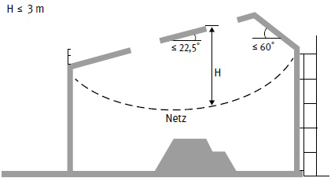
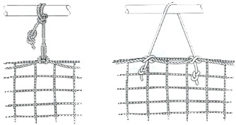
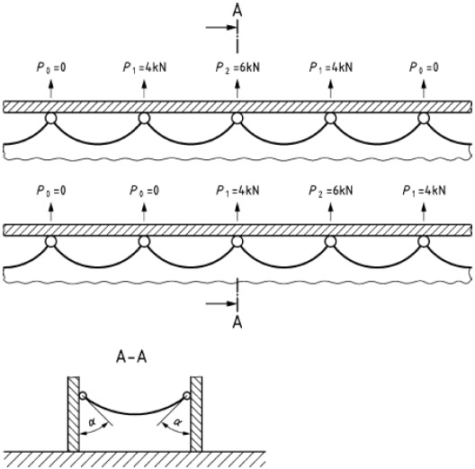
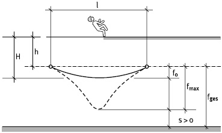
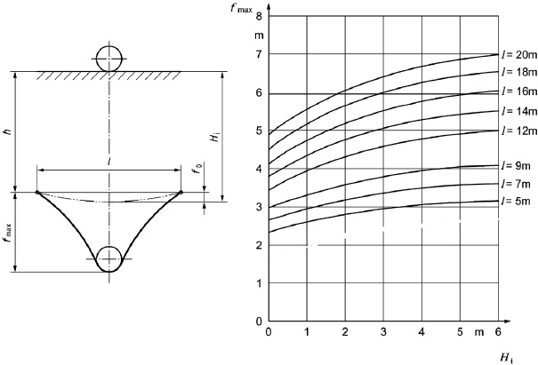
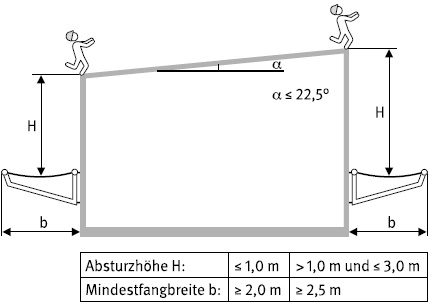
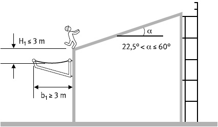

4.1.1 Allgemeines
Schutznetze (Sicherheitsnetze) dürfen nur von dem Hersteller in ihren Abmessungen verändert werden.
Eine Veränderung des Schutznetzes (Sicherheitsnetzes) bedingt eine neue Kennzeichnung.
In das Netz gefallene Gegenstände sind unverzüglich zu entfernen, wenn Personen beim Auftreffen durch sie verletzt werden können oder wenn die Tragfähigkeit des Netzes beeinträchtigt ist.
Werden Schutznetze (Sicherheitsnetze) oder Netzzubehör durch das Auffangen einer Person oder beim Auffangen von Gegenständen beansprucht, die die Tragfähigkeit oder Schutzfunktion beeinträchtigen, dürfen die Schutznetze (Sicherheitsnetze) nur mit Zustimmung einer fachkundigen Person wieder eingesetzt werden.
Seile sind gegen Aufdrehen zu sichern. Beschädigungen bei der Handhabung, insbesondere durch scharfe Kanten, sind zu vermeiden.
4.1.2 Krafteinleitung
Schutznetze (Sicherheitsnetze) sind an tragfähigen Konstruktionen zu befestigen. Die auftretenden Kräfte, siehe Abschnitt 4.2.3 und 4.3.1, müssen von den Aufhängepunkten und Konstruktionsteilen, z. B. Bauwerk, Gerüst, sicher aufgenommen und weitergeleitet werden können.
Dabei ist zu beachten, dass die Komponenten der Kräfte sowohl in Horizontalrichtung als auch in Vertikalrichtung von dem Konstruktionsteil aufgenommen werden müssen.
4.1.3 Absturzhöhe
Schutznetze (Sicherheitsnetze) sind möglichst dicht unterhalb der zu sichernden Arbeitsplätze aufzuhängen. Für Schutznetze (Sicherheitsnetze) vom System S gilt zusätzlich Abschnitt 4.2.2, Abb. 6 und für System T Abschnitt 4.3.2 Abb. 11 und Abb. 12.
4.1.4 Abstand zwischen Netz und Absturzkante
Der horizontale Abstand zwischen Netz und Absturzkante darf nicht mehr als 0,30 m betragen.
Das gilt z. B. auch für die Aufhängung der Netze im Hallenbau an Mittel- oder Zwischenträgern.
4.1.5 Verbindungen
Werden Schutznetze (Sicherheitsnetze) miteinander verbunden, sind Kopplungsseile so zu verwenden, dass entlang des Stoßes keine Zwischenräume von mehr als 100 mm auftreten und die Schutznetze (Sicherheitsnetze) sich nicht mehr als 100 mm gegeneinander verschieben können.
4.1.6 Übergabe/Erstmaligen Gebrauch
Der Ersteller bzw. die Erstellerin eines Schutznetzes hat dieses sicher bereitzustellen. Den Nachweis, dass diese Schutznetze sicher sind, kann die Erstellerin bzw. der Ersteller gegenüber den Nutzenden durch eine Prüfung dokumentieren.
Die Ergebnisse dieser Prüfung sind in Form eines Prüfprotokolls zu dokumentieren.
Hat sich der Schutznetzersteller (Netzmontagebetrieb) vom ordnungsgemäßen Zustand des Schutznetzes (Sicherheitsnetzes) überzeugt, darf er es an die Auftraggeberin/Nutzerin bzw. den Auftraggeber/Nutzer übergeben.
Es ist zweckmäßig, die Übergabe gemeinsam mit der Nutzerin bzw. dem Nutzer durchzuführen und z. B. in einem Übergabeprotokoll zu dokumentieren. In der Praxis hat es sich bewährt, Prüfprotokoll und Übergabeprotokoll in einem Dokument zusammenzufassen. Ein Beispiel dafür zeigt Anhang 5.
Die Unternehmerin bzw. der Unternehmer, der bzw. die ein Schutznetz für den Gebrauch durch seine bzw. ihre eigenen Beschäftigten erstellt, hat diese vor dem erstmaligen Gebrauch durch eine zur Prüfung befähigte Person prüfen zu lassen (Prüfung gemäß § 14 Absatz 1 BetrSichV).
4.2.1 Abmessungen
Die kleinste Fläche für Schutznetze (Sicherheitsnetze) vom System S muss mindestens 35 m2 betragen. Bei rechteckigen Schutznetzen (Sicherheitsnetzen) muss gleichzeitig die Länge der kürzesten Seite mindestens 5,0 m betragen.
Die Gültigkeit der Angaben in dieser Regel setzt diese Mindestgrößen voraus.
Für eine beispielhafte Darstellung des Schutznetzes (Sicherheitsnetzes) System S siehe Abb. 2.
Werden die Mindestabmessungen nicht eingehalten, ist ein besonderer Nachweis erforderlich (siehe zum Beispiel Anhang 1).
4.2.2 Absturzhöhe
Die Absturzhöhe in die Schutznetze (Sicherheitsnetze) darf 3,0 m nicht überschreiten; siehe Abb. 6.

Abb. 6 Absturzhöhe für System S
| Hinweis |
| Die Anforderungen an das Material der Schutznetze (Sicherheitsnetze) aus der DIN EN 1263 Teil 1 Ausgabe 2015 sind maßgeblich. |
4.2.3 Befestigung
Schutznetze (Sicherheitsnetze) System S sind an tragfähigen Konstruktionen zu befestigen. Für andere Befestigungsarten als Aufhängeseile muss ein Sicherheitsfaktor von 2 verwendet werden. Der Abstand zwischen den Befestigungspunkten darf nicht größer als 2,5 m sein.
Schutznetze können z. B. mit Aufhängeseilen, Karabinerhaken oder Schäkeln an den Aufhängepunkten befestigt werden.
Als Karabinerhaken dürfen solche analog nach DIN EN 362 "Persönliche Schutzausrüstungen gegen Absturz – Verbindungselemente" und DIN EN 12 275 "Bergsteigerausrüstung; Karabiner; Sicherheitstechnische Anforderungen und Prüfverfahren" eingesetzt werden, wenn deren Festigkeit für den vorgesehenen Befestigungsabstand ausreicht.
Werden Netze mit Aufhängeseilen an Aufhängepunkten mit Knoten befestigt, sind nicht selbsttätig lösbare Knoten zu verwenden oder die Knoten gegen unbeabsichtigtes Lösen zu sichern (siehe Abb. 7).

Abb. 7 Beispiele für Netzaufhängungen durch Umschlingung und Verknotung mit Seilen
Für die Bemessung jedes Aufhängepunktes ist eine charakteristische Last P von mindestens 6 kN unter einem Winkel von a = 45° anzunehmen. Für die Bemessung der Bauwerksteile sind drei charakteristische Lasten von 4 kN, 6 kN und 4 kN an der ungünstigsten Stelle zu berücksichtigen (siehe Abb. 8).

Abb. 8 Beispiel für charakteristische Lasten an den Aufhängepunkten
4.2.4 Überlappung
Werden Schutznetze (Sicherheitsnetze) System S überlappend ohne Kopplungsseil verwendet, muss die Überlappung mindestens 2,0 m betragen.
In der Praxis hat sich gezeigt, insbesondere bei großflächigen Schutznetzen, dass die Mindestüberlappung nicht regelkonform ausgeführt wird, daher empfiehlt sich eine Kopplung der Netze mit Kopplungsseilen.
Werden, wie in Abschnitt 4.1.5 beschrieben, Kopplungsseile verwendet oder wird eine Schutznetzfläche mittels Überlappung hergestellt, ist darauf zu achten, dass der Freiraum unter dem Schutznetz (Sicherheitsnetz) und die vorgegebene Absturzhöhe der gekoppelten bzw. überlappten Netzflächen den Anforderungen nach Abschnitt 4.2.5 entsprechen.
4.2.5 Freiraum unter dem Schutznetz (Sicherheitsnetz)
Schutznetze (Sicherheitsnetze) sind so aufzuhängen, dass beim Auffangvorgang abstürzende Personen nicht den Boden berühren, auf feste oder bewegliche Gegenstände treffen oder in Verkehrsbereichen andere Personen verletzen können.
Der Netzdurchhang kann durch den Einbau von Traversenseilen, die die Netze oder Netzflächen zusätzlich unterstützen, reduziert werden.
Traversenseile werden randparallel zum Verringern des Netzdurchhanges in ein Auffangnetz eingezogen und müssen mit den Randseilen verbunden sein.
Eine zusätzliche Reduzierung des Durchhanges kann durch eine Befestigung mit Aufhängeseilen des Traversenseils nach oben hin erreicht werden.
Unter dem Netz ist gegebenenfalls zusätzlich zu den Verformungen infolge Eigengewichts des Netzes und infolge größter Auslenkung beim Auffangen einer Person ein Sicherheitsabstand für eventuelle Verkehrswege oder Einbauten s > 0 freizuhalten (siehe Abb. 9).

| l | Spannweite des Schutznetzes (kleinste/kürzeste Seite) | |
| h | lotrechter Abstand zwischen Absturzkante und Aufhängepunkt des Schutznetzes | |
| H | lotrechter Abstand zwischen Absturzkante und Auftrefffläche im Schutznetz (Sicherheitsnetz) | |
| ƒo | Verformung infolge Eigenlast des Schutznetzes | |
| s | Sicherheitsabstand für eventuelle Verkehrswege oder Einbauten | |
| ƒmax | größte Verformung infolge Eigenlast und dynamischer Last | |
| ƒges | Freiraumhöhe resultierend aus größter Verformung infolge Eigenlast und dynamischer Last und Sicherheitsabstand für eventuelle Verkehrswege oder Einbauten |
Abb. 9 Freiraum unter dem Schutznetz (Sicherheitsnetz)

Abb. 10 Verformungen des Schutznetzes (Sicherheitsnetzes) in Abhängigkeit von der Spannweite und Lage der Aufhängungspunkte
Die Netzverformungen infolge Eigenlast und dynamischer Last dürfen näherungsweise nach Abb. 10 ermittelt werden.
Entsprechend der örtlichen Verhältnisse ist unterhalb des Netzes zusätzlich zur Netzverformung ƒmax ein Sicherheitsabstand s, z. B. für Einbauten oder Verkehrswege, zu berücksichtigen.
Schutznetze (Sicherheitsnetze) dürfen verwendet werden, wenn der Freiraum mit Hilfe von Abb. 10 eingehalten wird.
Beispiel für die Ermittlung des gesamten Freiraums ƒges:
| Gegeben: | |||
| Spannweite | I | = | 9,0 m |
| lotrechter Abstand | h | = | 2,1 m |
| vorhandene Verformung | fo | = | 0,8 m |
| Sicherheitsabstand für Verkehrsweg | s | = | 2,0 m |
| Vergleich der vorhandenen Verformung infolge Eigengewichts des Netzes mit der Bedingung für die Gültigkeit der Kurventafel: | |||
| zul. fo | = | 0,1 x 9,0 m | |
| = | 0,9 m | ||
| vorh. fo | < | zul. fo | |
| Absturzhöhe: | |||
| H | = | h + fo | |
| = | 2,1 m + 0,8 m | ||
| = | 2,9 m | ||
| Vergleich der ermittelten mit der zulässigen Absturzhöhe: | |||
| H | = | 2,9 m ≤ Hmax = 3 m | |
| Ermittlung Netzverformung: | |||
| aus Abb. 10 folgt für | |||
| H | = | 2,9 m | |
| und | |||
| I | = | 9,0 m | |
| fmax | = | 3,65 m | |
| Ermittlung des gesamten Freiraumes: | |||
| fges | = | fmax + s | |
| = | 3,65 m + 2,0 m | ||
| = | 5,65 m | ||
Durch Verringerung des Netzdurchhangs gegenüber den Voraussetzungen aus der Abb. 10 sind Schutznetze (Sicherheitsnetze) bereits bei einer Freiraumhöhe über 3,00 m einsetzbar, wenn
4.2.6 Absturz in ein Schutznetz unterhalb von Öffnungen
Bei Absturz in ein Schutznetz unterhalb von Öffnungen ist sicherzustellen, dass die Person nicht über die Netzaußenkante fallen kann. Eine wirksame mögliche Maßnahme kann z. B. eine den lokalen Umständen entsprechende Verbreiterung des Netzes über den Auftreffbereich hinaus sein.
4.3.1 Befestigung
Die Aufhängepunkte sind entsprechend den Angaben des Herstellers des Netzsystems T zu bemessen.
Darstellung des Schutznetzes (Sicherheitsnetzes) System T siehe Abb. 3.
4.3.2 Fangbreite
Die Fangbreite b eines Schutznetzes (Sicherheitsnetzes), die von der Absturzhöhe H abhängig ist, darf die Werte nach Abb. 11 nicht unterschreiten. Die Fangbreiten sind auch im Bereich von Bauwerksecken, -vorsprüngen und dergleichen einzuhalten.

Abb. 11 Absturzhöhen der Schutznetze und erforderliche Fangbreiten bei 0° bis 22,5° geneigten Flächen

Abb. 12 Absturzhöhen der Schutznetze und erforderliche Fangbreiten bei > 22,5° geneigten Flächen
Liegen die zu sichernden Arbeitsplätze auf mehr als 22,5 Grad geneigten Flächen, muss die Fangbreite b1 mindestens 3,0 m betragen. Der unterste Punkt des Schutznetzrandes darf nicht mehr als H1 = 3,0 m unter der Absturzkante hängen (siehe Abb. 12).
4.3.3 Überlappung
Werden Schutznetze (Sicherheitsnetze) System T überlappend ohne zusätzliche Verbindungen verwendet, muss die Überlappung mindestens 0,75 m betragen.
4.3.4 Korrosionsschutz
Stahlteile sind mindestens mit einem Korrosionsschutz nach DIN EN 39 "Systemunabhängige Stahlrohre für die Verwendung in Trag- und Arbeitsgerüsten – Technische Lieferbedingungen" zu versehen.